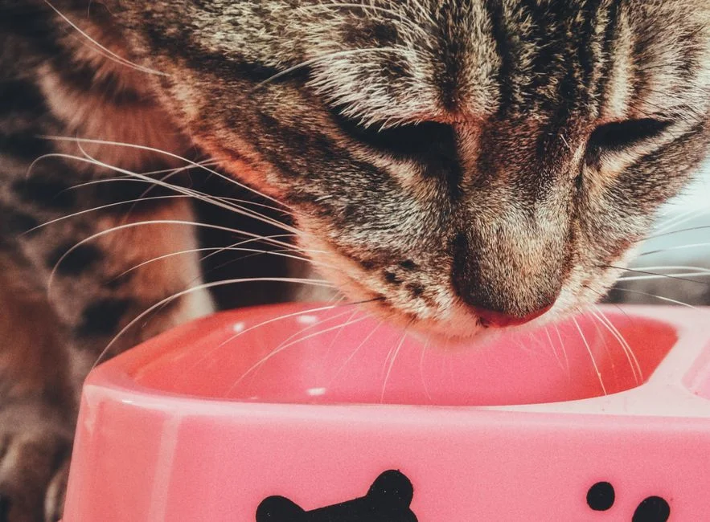
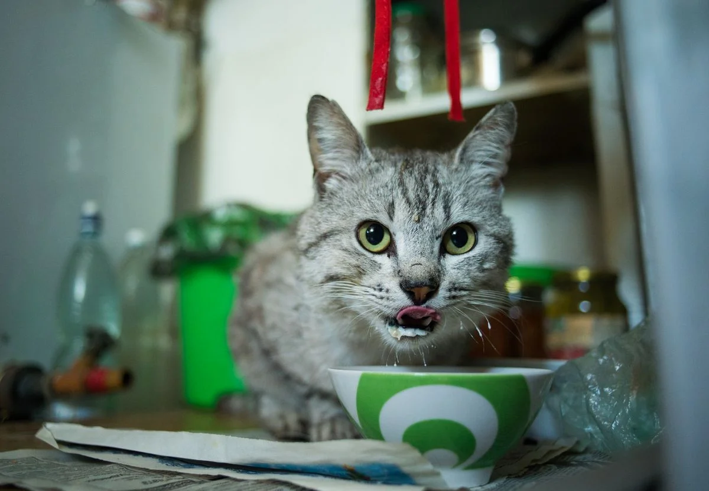
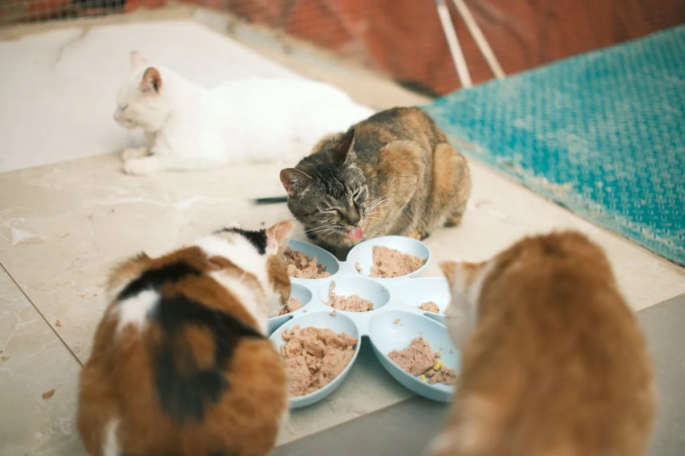

Este post contém links de afiliado. Podemos receber uma comissão em compras feitas através deles, sem custo adicional para você.
O Newpet 2L vale a pena para quem tem um único gato ou cão de pequeno porte e quer o comedouro automático mais barato da linha, com o essencial de programação por timer — mas não é a escolha certa para casas com mais de um pet ou cães maiores, que vão esvaziar o reservatório rápido demais.
Key Takeaways
- Capacidade de 2 litros, indicado para 1 gato ou cão de pequeno porte.
- Modelo de entrada da linha Newpet: preço mais baixo que o 4L, mas com reservatório proporcionalmente menor.
- Programação por timer no painel do aparelho, sem Wi-Fi ou app.
- Segue o mesmo padrão de construção do Newpet 4L, já avaliado neste site, mas com reservatório reduzido e possivelmente sem gravação de voz nos anúncios atuais.
- Reabastecimento mais frequente é o principal trade-off em troca do preço menor.
8,0/10 — Ótima porta de entrada para quem tem só um pet pequeno
Resumo em uma linha: Entrega o básico de um comedouro automático — porção programada, sem depender de app — pelo menor preço da linha, desde que a expectativa de capacidade esteja alinhada ao porte de um único pet pequeno.
Ideal para: Tutores de um único gato ou cão pequeno, com rotina previsível e orçamento mais apertado, que não precisam de controle remoto.
Não ideal para: Casas com mais de um pet, cães de porte médio/grande, ou quem viaja por vários dias sem poder reabastecer o reservatório.
Onde comprar: Mercado Livre, com preço e frete variáveis por vendedor.
O Newpet 2L segue a mesma lógica de programação por timer no painel físico do aparelho, sem necessidade de aplicativo, seguindo o mesmo padrão de construção do Newpet 4L, já avaliado neste site. A diferença central está no reservatório: 2 litros em vez de 4, o que reduz o custo do produto mas também a autonomia entre reabastecimentos.
Como modelo de entrada, o Newpet 2L costuma aparecer entre as opções mais baratas da categoria de comedouros automáticos — uma faixa de preço que, segundo o próprio guia deste site sobre comedouro automático para pet, parte de cerca de R$ 28 e passa de R$ 300 em modelos com Wi-Fi, câmera e app. É o tipo de produto pensado para quem quer testar se um comedouro automático resolve o problema da rotina, sem investir de imediato no modelo maior.
Assim como o Newpet 4L, a configuração de horários e porções é feita diretamente nos botões do aparelho. Isso significa menos dependência de conexão Wi-Fi ou de app instável, mas também menos flexibilidade para quem quer ajustar horários remotamente. Para uma rotina fixa — sair de manhã e voltar à noite, por exemplo — essa limitação raramente é um problema real.
Além da capacidade reduzida, é comum que a versão de entrada da linha não inclua alguns recursos presentes no modelo maior, como a gravação de voz personalizada. Vale conferir a ficha técnica do anúncio específico antes de comprar, já que pode haver variação entre vendedores e lotes — um cuidado válido para qualquer comedouro automático de entrada nessa faixa de preço.

| Especificação | Newpet 2L |
|---|---|
| Capacidade | 2 litros |
| Conectividade | Nenhuma (timer no painel) |
| Gravação de voz | Normalmente não incluída no modelo de entrada (conferir anúncio) |
| Alimentação | Tomada, com possibilidade de backup a pilha em alguns anúncios |
| Indicado para | 1 gato ou cão de pequeno porte |
| Onde encontrar | Mercado Livre — busca "Newpet 2L" |
Esta análise foi construída a partir da ficha técnica e das fotos divulgadas em anúncios ativos do Newpet 2L no Mercado Livre, comparando o padrão de construção e a proposta de uso com o Newpet 4L, já testado e avaliado neste site. Não se trata de um teste laboratorial conduzido por nós; trata-se de uma análise baseada nas especificações típicas dessa linha de produto e no histórico de avaliações do modelo na própria plataforma de venda. Recomendamos conferir as avaliações mais recentes no anúncio antes de comprar, já que a qualidade de fabricação pode variar entre lotes e vendedores. Veja nossa política editorial e de afiliados para entender como selecionamos e avaliamos produtos.
A pergunta mais comum de quem pesquisa a linha Newpet é se compensa economizar no 2L ou já ir direto para o 4L. A resposta depende quase inteiramente do número de pets e do porte do animal. Para um único gato pequeno com rotina de porções controladas, os 2 litros do modelo de entrada tendem a durar tranquilamente entre reabastecimentos, e a diferença de preço para o 4L pode não se justificar.
Já para cães de médio ou grande porte, é recomendável optar por reservatórios maiores para evitar reposições frequentes (Guia Comedouro Automático, retrieved 2026-08-21) — assim como em casas com mais de um pet dividindo o mesmo comedouro, cenário em que o reservatório de 2 litros esvazia muito mais rápido, o que significa reabastecer com mais frequência — e, na prática, elimina boa parte da conveniência que motivou a compra de um comedouro automático em primeiro lugar. Nesse cenário, vale a pena pagar mais pelo Newpet 4L, que também já avaliamos em detalhe neste site, incluindo a gravação de voz e o sistema antiderrapante que costumam faltar na versão de entrada.

É a escolha certa para quem está testando pela primeira vez se um comedouro automático resolve a rotina — por exemplo, alguém que sai cedo e volta tarde e só precisa garantir uma ou duas refeições programadas para um único pet pequeno. Também faz sentido como comedouro secundário, por exemplo em um segundo ambiente da casa, complementando um comedouro maior já existente.
Para quem já sabe que vai precisar de mais capacidade — multi-pet, cão de porte médio ou grande, ou viagens mais longas sem reabastecimento — o investimento extra no Newpet 4L tende a compensar desde o início, evitando a frustração de trocar de aparelho pouco tempo depois.
Por ter reservatório menor, o Newpet 2L exige atenção redobrada ao nível de ração restante, especialmente em dias de maior consumo do pet. Vale limpar o reservatório e o compartimento de saída periodicamente para evitar acúmulo de poeira da própria ração, e verificar se o mecanismo giratório libera a quantidade programada de forma consistente — um cuidado válido para qualquer comedouro mecânico, independentemente do tamanho.
Se o modelo específico do seu anúncio não tiver backup de pilha, vale considerar um nobreak simples ou verificar a estabilidade da rede elétrica em casa, já que uma queda de energia sem backup pode deixar o pet sem comida em um momento crítico.
O Newpet 2L cumpre bem o papel de porta de entrada: programação simples, preço baixo e o essencial de um comedouro automático para quem tem um único pet pequeno. Para qualquer cenário com mais de um animal ou porte maior, vale a pena considerar o Newpet 4L desde o início.
Para entender todos os tipos de comedouro automático disponíveis no mercado, veja nosso guia completo de comedouro automático para pet.
Ainda em dúvida se compensa migrar para um sistema automático? Veja nossa análise sobre se um comedouro automático vale a pena para o seu caso.
Escrito por Nildo Alves. Especificações conferidas em anúncios ativos do Mercado Livre em 2026-08-21; veja nossa política editorial.
🐾 Confira o preço e a disponibilidade atual no Mercado Livre.
Ver no Mercado Livre →Link de afiliado: podemos receber uma comissão por compras feitas através deste link, sem custo adicional para você.
Não é o cenário ideal. Com 2 litros de capacidade, o reservatório esvazia rapidamente quando dividido entre dois ou mais pets, exigindo reabastecimento frequente. Para multi-pet, o Newpet 4L costuma ser mais adequado.
Nos anúncios do modelo de entrada, esse recurso normalmente não aparece ou é mais limitado do que no Newpet 4L. Vale conferir a ficha técnica específica do anúncio antes de comprar, já que pode haver variação entre vendedores.
Depende do porte e da quantidade de pets. Para um gato pequeno ou cão de porte pequeno vivendo sozinho, o 2L costuma ser suficiente e mais barato. Para cães maiores ou mais de um pet, a diferença de preço para o 4L tende a compensar pela redução na frequência de reabastecimento.
Nildo Alves — curadoria de produtos pet no Smart Pet Gadgets. Testa e pesquisa produtos para cães e gatos, cruzando especificações de fabricante com boas práticas veterinárias e dados de mercado.
Sobre o Smart Pet Gadgets · Contato · Política editorial e de afiliados